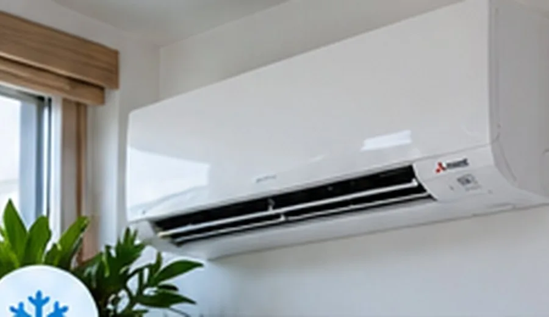

ELECTRIC
Mitsubishi Electric
Airconditioning voor koelen, verwarmen en ventilatie.
Brochure 2021 · PDFBekijk brochure ↗Interesse in Mitsubishi? Vraag een offerte aan →Advies over airconditioning, installatie en onderhoud voor uw woning of bedrijf.
Met een passende airconditioner kunt u uw ruimte comfortabel koelen en, afhankelijk van het systeem, ook verwarmen.
Wij bespreken uw wensen, de beschikbare ruimte en de praktische mogelijkheden voor plaatsing.
Vraag vrijblijvend informatie aan →
We bespreken de mogelijkheden passend bij uw situatie.
We bespreken de mogelijkheden passend bij uw situatie.
We bespreken de mogelijkheden passend bij uw situatie.
Bekijk de beschikbare brochures van de merken die Y. van den Bergh Klimaattechniek presenteert. De onderstaande documenten zijn oudere uitgaven (2021/2022); voor actuele modellen en mogelijkheden kunt u contact opnemen.
Airconditioning voor koelen, verwarmen en ventilatie.
Brochure 2021 · PDFBekijk brochure ↗Interesse in Mitsubishi? Vraag een offerte aan →Catalogus met airconditioningsystemen en productinformatie.
Catalogus 2021/2022 · PDFBekijk brochure ↗Interesse in Daikin? Vraag een offerte aan →Informatie over airconditioning en multisplitsystemen.
Brochure 2021 · PDFBekijk brochure ↗Interesse in Panasonic? Vraag een offerte aan →Bekijk de beschikbare Haier-productbrochure via Wasco.
Brochure 2021 · PDFBekijk brochure ↗Interesse in Haier? Vraag een offerte aan →Deze documenten worden aangeboden via de bestaande website van Y. van den Bergh Klimaattechniek. Beschikbaarheid en actuele productspecificaties kunnen afwijken.